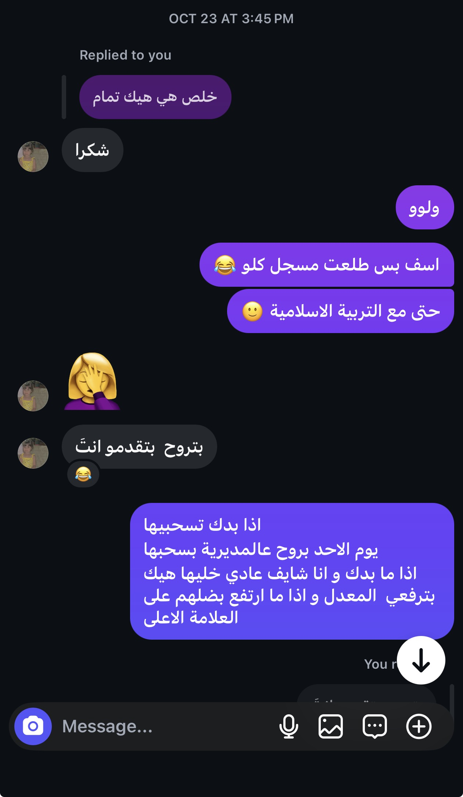

إلى ابنتي ❤️ قبل سنة بدأت حكايتنا… واليوم صارت بدايتنا ذكرى أحملها بقلبي.
هذه الصفحة لكِ وحدكِ، يا حبيبتي ❤️
01 — THE BEGINNING
ما كنت أعرف أن البداية الصغيرة ستوصلني إلى هنا.
قبل سنة، بدأ أول تواصل بيننا، وما كان عندي طريقة أعرف فيها شو رح تعني لي هالبداية مع مرور الأيام. ما كنت أعرف تفاصيل الحكاية، ولا اللحظات اللي رح تظل بذاكرتي، ولا إنّي رح أرجع يومًا وأحتفل بأول صفحة منها.
لكن اليوم، لما أرجع للبداية، ما بشوف مجرد محادثة قديمة. بشوف اللحظة اللي فتحت بابًا لأعرفكِ أكثر، وأصير أملك معكِ ذكريات ما بتشبه أي شيء ثاني.
مكان لقطة من أول محادثة بينكما

😂.
02 — THE MOMENT I REMEMBER
ولما مسكتِ إيدي لأول مرة…
في ذكريات كثيرة ممكن ننسى تفاصيلها مع الوقت، لكن في لحظات بتظل إلها مكان مختلف بداخلنا. بالنسبة إلي، لحظة لما مسكتِ إيدي لأول مرة واحدة من هاللحظات.
يمكن من الخارج كانت حركة بسيطة، لكن بالنسبة إلي ما كانت مجرد إيد لمست إيدي. كانت لحظة حسّيت فيها إن الحكاية اللي بدأت بالكلام صارت أقرب، وصار إلها ذكرى أقدر أرجعلها بقلبي قبل ما أرجعلها بذاكرتي.
لو أقدر أرجع لهديك اللحظة، ما بدي أغيّر فيها إشي. بدي أعيشها مرة ثانية، بنفس بساطتها، وبنفس الشعور اللي تركته فيّ. وأتمنى إن الأيام تعطينا لحظات أكثر نكون فيها قريبين، من غير شاشة ولا مسافة بيننا.
«يمكن إيدي ما نسيت هاللحظة… لأن قلبي احتفظ فيها قبلها.»
يا ابنتي ❤️، يمكن ما حكيت لكِ وقتها كل اللي كان بداخلي، ويمكن اللحظة مرّت أسرع مما تمنّيت. بس أنا ممتن إنها صارت جزءًا من حكايتنا. من بين كل الأشياء اللي ممكن تنحكى، أحيانًا ذكرى صغيرة وصادقة بتقدر تقول أكثر من كلام كثير.
03 — THE LITTLE THINGS
أشياء صغيرة، بس مكانها كبير عندي.
أحب إن حكايتنا مش مكوّنة من يوم واحد فقط. هي كمان من الرسائل اللي تبادلناها، والأحاديث اللي أخذتنا من موضوع لموضوع، واللحظات اللي صارت جزءًا من يومنا من غير ما نخطط لها.
لما أرجع لمحادثاتنا القديمة، ما بقرأ كلمات وبس؛ بمرّ على مراحل من حكايتنا. بشوف كيف بدأنا، وبحس بالامتنان إن عندي ذكريات أقدر أرجعلها لما أشتاق أو أحتاج أتذكر جمال البداية.
أحب التفاصيل اللي يمكن تمرّ عليكِ بشكل عادي، لأنها بالنسبة إلي صارت مرتبطة فيكِ. وأحيانًا مجرد تذكّر موقف صغير منكِ كفيل يخليني أبتسم، حتى لو كنتِ بعيدة عني.
لو سألتيني شو أجمل شيء في مرور سنة على بدايتنا، ما رح أقول إن كل يوم كان مثاليًا. رح أقول إن عندنا حكاية حقيقية، فيها لحظات وذكريات ومشاعر تستحق إني أتوقف عندها وأقول: الحمد لله إننا بدأنا نحكي.
04 — EVEN FROM FAR AWAY
كنت أتمنى أكون جنبك اليوم.
يا ابنتي ❤️، لو كانت المسافة بإيدي، كان نفسي تكون هالذكرى بوجودك قدامي، وأحكيلك كل هالكلام وأنا شايف عيونك وردّة فعلك. كان نفسي تكون ذكرى اليوم حضنًا وابتسامة ولحظة نعيشها سوا، مش رابطًا على شاشة.
لكن بما إننا ما بنقدر نلتقي الآن، حبيت أعمل لكِ شيئًا يبقى عندكِ، تفتحيه متى ما حبيتي، وتتذكري إن في شخص فكّر في بدايتكم، ورجع لذكرياته، وحاول يحوّل مشاعره لشيء ملموس يوصل لكِ.
«المسافة منعتني أكون جنبك اليوم، لكنها ما منعتني أحتفل فيكِ وبأول صفحة من حكايتنا.»
05 — ONE YEAR, ONE STORY
لو رجع فيّ الزمن لأول تواصل…
ما بقدر أقول إني كنت أعرف شو مخبّي إلنا المستقبل. لكن لو رجعت لهديك البداية، فأكثر شيء بتمناه هو إني أعطي الحكاية نفس الفرصة حتى تبدأ من جديد، وأكتشفكِ مرة ثانية، وأوصل للحظة اللي صارت فيها ذكرياتكِ جزءًا من ذكرياتي.
هاي السنة هي أول فصل، مش كل الكتاب. ولسه في أماكن بنتمناها، ولحظات بنستناها، وذكريات نفسي أعيشها معكِ وجهًا لوجه.
06 — OPEN THIS WITH YOUR HEART
رسالتي الأخيرة إلكِ… يا ابنتي ❤️
خذي وقتك، وافتحي الرسالة لما تكوني مستعدة.
يا ابنتي ❤️،
اليوم مرّت سنة على أول تواصل بيننا. سنة من يوم بدأت فيه حكايتنا، من غير ما نعرف شو رح تحمل إلنا الأيام، ولا أي ذكريات رح تصير غالية علينا.
وأنا أكتب لكِ، رجعت بذاكرتي لأول الطريق، ووصلت للحظة لما مسكتِ إيدي لأول مرة. يمكن ما كانت اللحظة طويلة، ويمكن ما كان فيها كلام كثير، لكن إلها مكان خاص عندي. لأنها ذكرى أقدر أرجعلها وأتذكر إن حكايتنا ما بقيت مجرد كلمات على شاشة؛ صار إلها لحظات عشناها واحتفظنا فيها بداخلنا.
يا ابنتي، ما بدي هالرسالة تكون مجرد كلام جميل بمناسبة تاريخ. بديها تكون طريقة أقول لكِ فيها إن بدايتنا مهمة عندي، وإن التفاصيل اللي عشناها تستحق إني أتذكرها وأحتفل فيها. وأتمنى لما ترجعي لهالصفحة في يوم من الأيام، تبتسمي وتتذكري إن في ذكرى من ذكرياتنا كانت غالية عليّ لدرجة إني صنعت لكِ مكانًا صغيرًا تحفظيها فيه.
كان نفسي أكون جنبك اليوم، وأحكيلك كل هذا وأنا ماسك إيدكِ، بدل ما أكتب لكِ من بعيد. لكن إلى أن يجي اليوم اللي نقدر فيه نلتقي ونصنع ذكريات جديدة، حبيت أوصل لكِ جزءًا من قلبي بهذه الطريقة.
ما بعرف شو رح تحمل السنة الجاية بكل تفاصيلها، لكن بعرف إني أتمنى إلنا أيامًا أهدأ وأجمل، وضحكات أكثر، ولحظات قريبة ما نحتاج فيها نحسب المسافة بيننا. أتمنى نكمل حكايتنا بصدق، واهتمام، وذكريات نرجع إلها ونحكي: بتتذكري لما…؟
كل عام وأنتِ جزء جميل من حكايتي، وكل عام وأول تواصل بيننا ذكرى أبتسم لما أتذكرها.
ولو كان عندي شيء واحد أقدر أقدمه لكِ اليوم، فهو إنّي أقول لكِ: أنا ما نسيت البداية، ولا نسيت لحظة إيدكِ بإيدي، وحبيت أخلي ذكرى اليوم تليق بالمكان اللي إلها بقلبي.